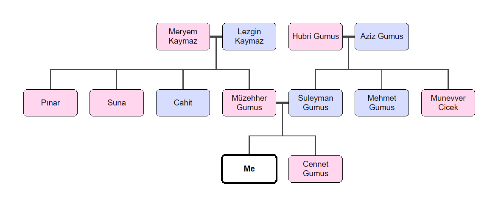
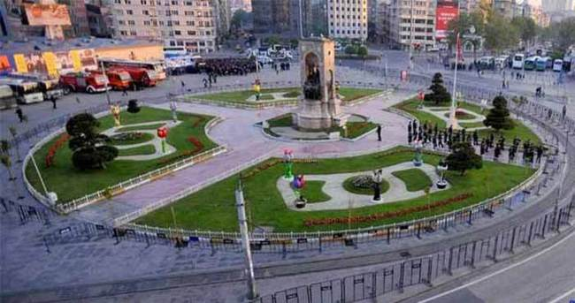
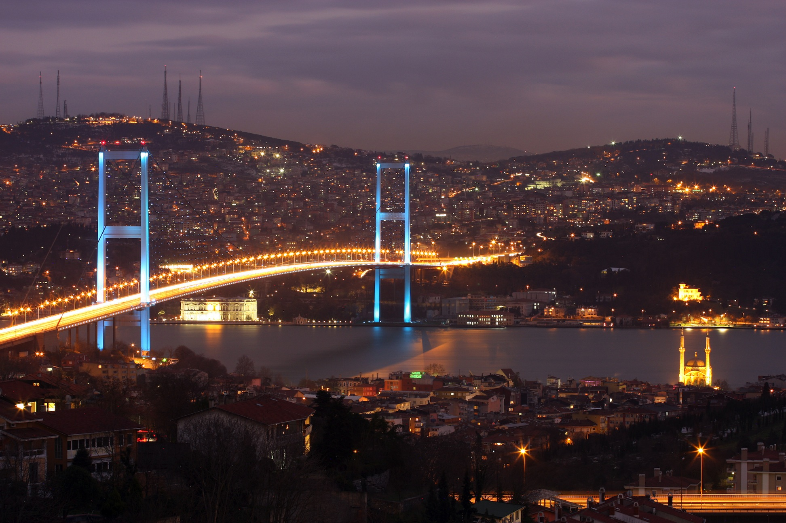
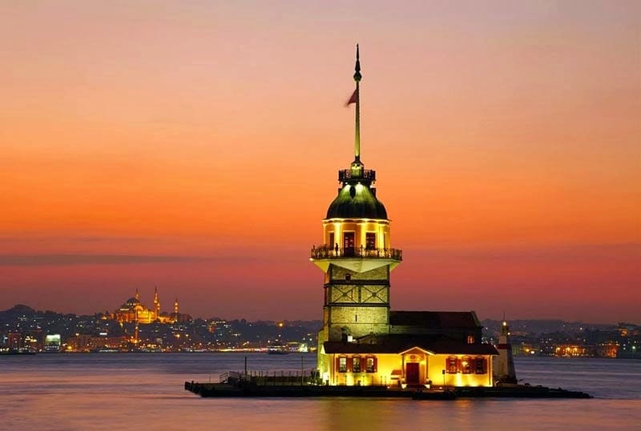
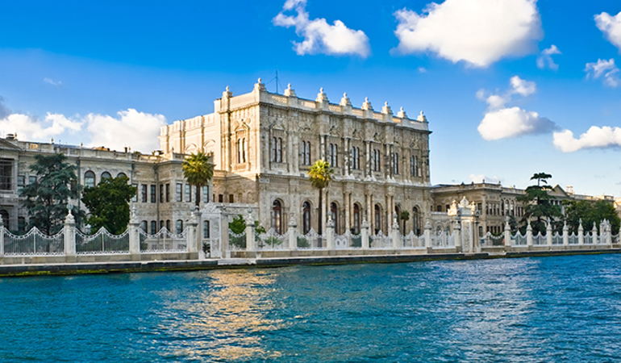

Click following headers to go to the specific topics about me WHO AM I ? MY FAMILY TREE MY HOBBIES MY HOMETOWNWHO AM I?
I'm Muhammet Gumus.I'm 22 years old.I'm from Istanbul and I was born in Istanbul but recently I live in Eskisehir because of my education.I have two siblings and I'm the little one.My parents live in Istanbul. I'm studying Computer Engineering at Anadolu University and this is my second year on my department.I really like computers so in my opinion i am exactly lucky person because I have been studying department that i love.MY FAMILY TREE
 This schema example describes my own family MY HOBBIES
Basketball = Basketball has really important and indispensable area of my life. I really love play basketball and watching matches on the TV. I mean NBA not the other basketball leagues :) Music = The another indispensable point of my life is absolutely music. I love discovering and listening new musics from all around the world and all kinds of them because i believe that every song has different story behind of them like a every people in this world. Cinema = I interested watching the award-winnings films. I really enjoy when i watching them. For example Nolan Brother's films are really amazing for me.Every films are of them has unexpectable end.MY HOMETOWN
İstanbul is very important place in the world.The city is spread over an area of 7.500 km2 150 km long and 50 km wide.Istanbul became the biggest and the most crowded city of Europe. Because, ıts location between Asia and Europe, the city always had a great geopolitical importance.the city population is estimate 12 to15 millions.Around 2 millions tourists visit İstanbul every year.They are see the historical and natural beauties of the city. The city has a lots of historical mosque,church and museums of Turkey. Most popular places are given below 1- Taksim Square = The large square at the end of the Istıklal street is the Taksim square, which is one of the most active centers of İstanbul.The square is the most important for Istanbul. There are a lot of different counturies people.There are a lot of big department store this place is really beatiful. 2- Bosphorus Bridge = The project preparations were started in1950. The bridge building started in 1970.It was completed on 29 October 1973. It was built by German and England engineers.Thirty five engineers and four hundred Turkish workers were employed during the construstion.Its cost was $25 millions.The height of the bridge from sea is 64 m. The Bosphorus Bridge carries 200.000 vehicles and 600.000 people a day. 3- Leandros Tower = The Leandros Tower covers on area of 1250 m2 and was built 200 metres from the Usküdar beach.It has got a intelligent history.One day a witch has got apples for the girl and gave her a poisana us apple, she did after eating it.That is why the tower is called the Leandros Tower 4- Dolmabahce Palace = The Dolmabahçe Palace Museum was built between 1611-1614.It ıs that 14 tens of gold and 40 tons of silver were used for the decoration ofthe palace.The furniture was bought from Paris, the vases from Hereke and Lyan , the crytal materials from Bccarant and the the can dlesticks from England with special order.Almost all of 131 large and 99smal hand-made carpets are silk carpets, and they were woven in the royal workshops in Hereke.The total area covered by the carpets is 4.500 square meters.The total area at the palace is 250.000 square meters There are 12 gates.There are 285 rooms, 43 holls, 6 balconies, 6 hamams and 1427 windows. In the deconation, 156 clocks,280 vases and 58 candle sticks.By the way, the carpet of 124 m2 is the second largest hand-made Hereke carpet in Turkey. Click to turn head of the page